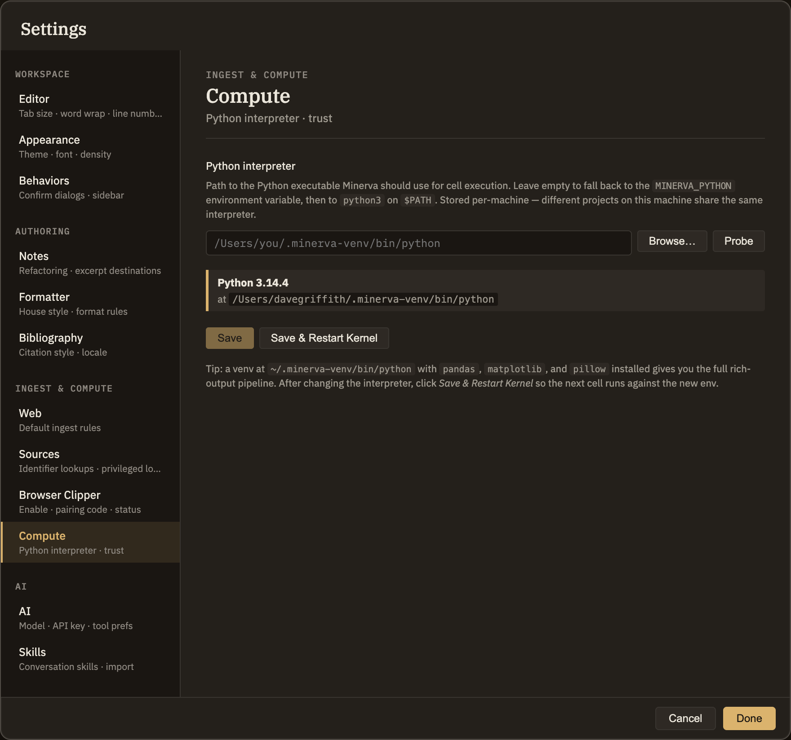

Compute
Minerva can run Python code cells right inside your notes. The Compute tab does one thing: it lets you choose which Python on your computer does that work. If you're happy with the Python Minerva already finds, you never need to open this tab. To learn how to write and run code cells, see Code & compute cells.
Choosing your Python
By default, Minerva looks for Python on your computer automatically. If you'd rather point it at a specific one — say, a setup you've prepared with the packages you use — you can name it here. Your choice applies to every thoughtbase you open on this computer.

Minerva won't run Python in a thoughtbase until you say it's okay. The first time you run a code cell there, it asks for a quick confirmation, then remembers your answer for the rest of that thoughtbase. That's a one-time prompt at the moment you run a cell, not a switch on this tab. For the full picture, see Code & compute cells.